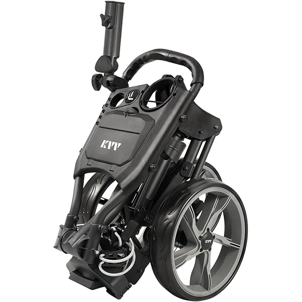
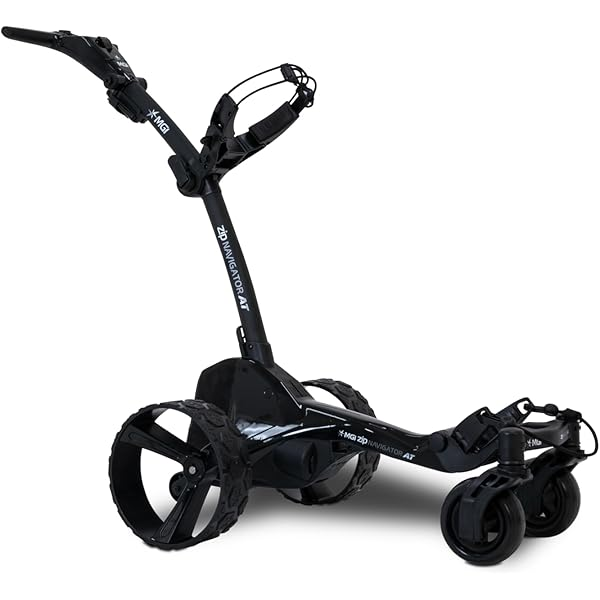
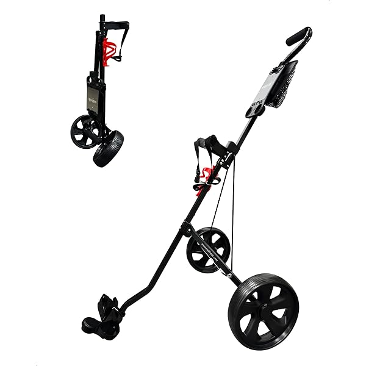
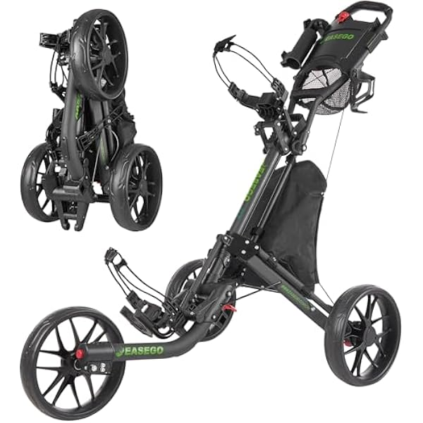
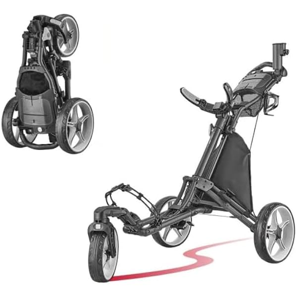
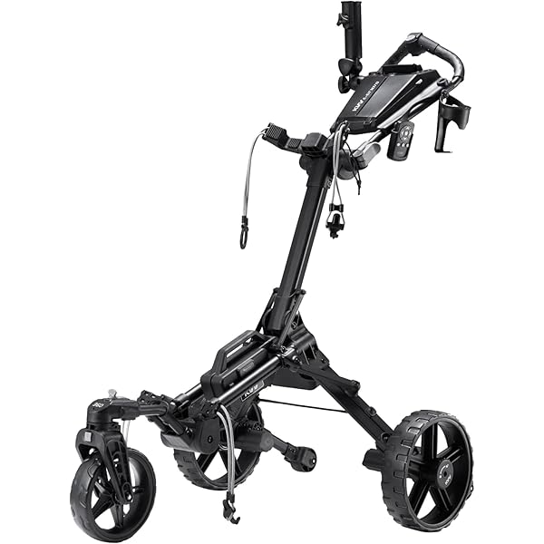

高尔夫手推车市场深度调研报告
基于亚马逊、YouTube、TikTok、Reddit、用户评论等多维数据洞察
执行摘要
用最简单的话，告诉所有部门"这个市场值不值得做、怎么做"。
第一章 · 市场规模与增长
一句话：这是一个规模适中（全球约 4 亿美元）、增长稳健（年增 5%–6%）的细分赛道，电动化是最确定的方向，线上（尤其亚马逊）是跨境卖家的主战场。
A. 宏观市场分析（全球 + 北美）
B. 亚马逊美国市场销售分析
第二章 · 市场需求与趋势
一句话：社媒上大家最常聊的是稳定性/坡道表现、电动化、性价比和品牌对比；搜索端需求高度集中在"golf push cart"主词，且三轮、袋车、品牌词是稳定的高购买意向入口。
A. 社媒需求分析（三平台共 7,100+ 条讨论）
Reddit · 深度选购讨论
关注点：品牌对比(15%)、稳定/坡道(14%)、电动遥控(10%)、性价比(10%)。
场景："想走路健身但球友都坐车"、换代升级旧车。
新功能/材料：常点名 Clicgear/Bag Boy Nitron/Sun Mountain，强调"折叠要小、无多余零件、铝合金轻量"。
YouTube · 评测驱动
关注点：稳定/坡道(15%)、电动遥控(13%)、性价比(8%)。
场景：看测评决定是否升级、关注细节做工。
新功能/材料：称赞"手机架、音乐扩音槽、外观设计"，吐槽"杯架旋钮易松"——细节体验是评测焦点。
TikTok · 大众种草
关注点：走路/健康(5%)、稳定(3%)、性价比(3%)。
场景：展示走路打球的生活方式、晒装备。
新功能/材料：有声量直接喊"要手刹不要脚刹，坡道方便太多"——验证手刹需求。
B. 核心搜索词分析（需求入口）
| 核心搜索词 | 含义 | 月搜索量 | 购买率 | 解读 |
|---|---|---|---|---|
| golf push cart | 高尔夫手推车 | 120,378 | 2.2% | 绝对主词，流量必争 |
| golf bag cart | 球袋车 | 25,860 | 2.2% | 第二大通用词 |
| golf push cart 3 wheel | 三轮手推车 | 22,180 | 2.9% | 三轮是主流形态、购买意向高 |
| golf pull cart | 拉车 | 18,740 | 2.8% | 意向高 |
| clicgear / caddytek push cart | 品牌词 | 13,313 / 11,521 | 3.3–3.8% | 品牌词购买率最高，品牌心智=高转化 |
C. 核心搜索词趋势（需求季节性）
第三章 · 市场形态及趋势
一句话：亚马逊上 普通手推车是绝对主体（约8成），电动手推车是高增长的第二梯队，简易手推车体量小且基本不增长。
C. 各品类代表机型（亚马逊销量最高款）

手推车 · KVV
ASIN B08FQYHX2Q · 销量冠军款

电动手推车 · MGI
ASIN B0CTLQFN7C · 销量冠军款

简易手推车 · Caddytek
ASIN B0CLNHWQB4 · 销量冠军款
D. 结构配置偏好（近3个月在架机型）
注：电动手推车近3个月仅 3 款在架，样本过小，配置以“电池/可调把手/杯架/手机支架”为标配，结论参考性有限。
E. 进入建议
第四章 · 竞争格局
这个市场是不是被大牌垄断、新人还有没有机会进。手推车与电动手推车分别独立分析，不做取舍。
A. 手推车 · 中度集中，仍有缝隙
| 品牌 | 销售额占比 | 销量占比 |
|---|---|---|
| Caddytek | 35.6% | 43.2% |
| EASEGO | 19.8% | 16.9% |
| Bag Boy | 15.6% | 9.8% |
| KVV | 10.2% | 10.6% |
| FLAGTAG | 4.9% | 5.3% |
| Clicgear | 4.9% | 2.8% |
渠道策略（配送方式 · ASIN去重，共239）
| 配送方式 | FBA | AMZ自营 | FBM | 未标注 |
|---|---|---|---|---|
| ASIN数 | 104 | 51 | 36 | 48 |
点击展开 · 手推车新品进入情况
B. 电动手推车 · 高度垄断，门槛极高
| 品牌 | 销售额占比 | 销量占比 |
|---|---|---|
| MGI | 78.6% | 73.6% |
| KVV | 19.1% | 24.5% |
| Certified Brands | 2.3% | 1.9% |
渠道策略（配送方式 · ASIN去重，共10）
| 配送方式 | FBM | FBA | AMZ自营 | 未标注 |
|---|---|---|---|---|
| ASIN数 | 4 | 2 | 2 | 2 |
点击展开 · 电动手推车新品进入情况
第五章 · 价格判断
定价定在哪个区间最有机会，价格和产品结构怎么挂钩。手推车与电动手推车分别独立分析，不做取舍。
A. 手推车 · 建议主攻 $156–242 中段
点击展开 · 手推车价格详细分析
| 价格区间 | ASIN数 | 销售额占比 | 销量 | 竞争力* |
|---|---|---|---|---|
| $30–150 入门 | 93 | 20.0% | 33,150 | 356 |
| $156–242 主流 | 112 | 59.8% | 68,450 | 611 |
| $249–370 高端 | 34 | 20.2% | 14,150 | 416 |
*竞争力 = 区间销量 ÷ 区间ASIN数，越高表示单链接平均产出越好
价格天花板与品牌溢价
最低价 $30 / 最高价 $370 / 市场均价 $176。品牌溢价：Clicgear +73%、Bag Boy +53%、EASEGO +22%，Caddytek/KVV 接近均价——高端价位被欧美老牌占据，性价比段是中国卖家主场。
结构配置与价格的关联
| 配置 | 带 vs 不带均价 | 溢价 | 渗透率 |
|---|---|---|---|
| 手动刹车 | $265 / $154 | +$112 | 20% |
| 雨伞支架/底座 | $184 / $120 | +$64 | 88% |
| 储物隔间 | $180 / $140 | +$40 | 89% |
| 杯架 | $178 / $148 | +$30 | 92% |
| 手机/GPS支架 | $193 / $166 | +$27 | 37% |
B. 电动手推车 · 高客单，$1545+ 段最走货
点击展开 · 电动手推车价格详细分析
| 价格区间 | ASIN数 | 销售额占比 | 销量 | 竞争力* |
|---|---|---|---|---|
| $549–697 低价 | 3 | 2.5% | 150 | 50 |
| $1007–1239 中段 | 3 | 21.8% | 750 | 250 |
| $1545–1695 高端 | 4 | 75.7% | 1,750 | 438 |
*竞争力 = 区间销量 ÷ 区间ASIN数
价格天花板与品牌溢价
最低价 $549 / 最高价 $1695 / 中位 $1167。龙头 MGI 主打 $1500+ 高端，KVV 以更低价位切入中段——高端由 MGI 定义，价格天花板高、利润空间大。
第六章 · 用户需求与痛点
买的人是谁、为什么买、在抱怨什么、还想要什么。手推车与电动手推车分别独立分析，不做取舍。
A. 用户画像（按品类分开）
手推车买家：想多走路、重健康的性价比型步行球友
“以中年及银发为主、为健康而走路的休闲/进阶球友，理性消费、最看重轻便易折叠，常因背包累、护膝护腰而换手推车。”
购物记录显示：复购的非高尔夫商品里家居/数码/日用(19%)、健康养护类(约9%，护膝/支撑/按摩等)占比高；购买商品中位价仅 $26，消费理性；平均给分 4.1（不轻易打满分）。高尔夫复购集中在推车配件（杯架/手机架/雨伞架），关注"轻量、可折叠、快开"。
电动手推车买家：成熟、有支付力、爱科技的资深步行球友
“偏成熟、收入较高、愿为性能付费的资深球友，追求'解放双手、轻松走完18洞'，对科技与品质更敏感。”
与手推车买家相比：数码科技类商品占比近翻倍（15% vs 8%），高尔夫配件复购更高（18% vs 15%）；高频词集中在 remote / battery / terrain / waterproof / navigator，说明更在意遥控、续航、全地形与耐用。同样有约 8% 购买健康养护类商品——核心痛点仍是"走路但别累着身体"。
B. 使用场景与购买动机
手推车 · 他买的不是"一辆车"，是……
① 一身轻松走完18洞、还能顺带锻炼的底气；② 30秒收放、塞进后备箱不占地的省心；③ 一个不弯腰就能拿到水、手机、记分卡的趁手助手。
电动 · 他买的不是"遥控玩具"，是……
① 彻底解放双手、专注打球的体验上限；② 上下坡都稳、电量够撑整轮的可靠；③ 一件能在球场上彰显品质的"大件装备"。
C. 差评分析（1–3星高频问题）
D. 隐性需求（4–5星里"希望增加/改善"）
结构更省心
储物袋加拉链/扣防掉落；前轮默认对正、免调；折叠更小更稳、无多余零件。
配件可单独买
杯架/卡夹/水瓶架坏了能单独更换，而不是整机退货；卡夹要更紧、水瓶颠簸不掉。
稳定与便利升级
侧坡/湿地更稳（双前轮、强抓地）；普遍呼吁"手刹"；电动要直线跟踪准、续航更足、说明书更清楚。
E. KANO 需求模型
必备型（缺了就差评）
前轮不刮包、部件耐用不断裂、可靠售后/可补配件、轻便可折叠、稳定不侧翻。
期望型（越好评价越高）
折叠更小更快、滚动顺滑、收纳够用、电动续航与遥控顺手、客服响应快。
兴奋型（有了惊喜）
手刹（高呼声、低渗透）、双前轮侧坡稳、磁性钢垫/球标等贴心细节、手机无线充。
无差异型
计分器、雨伞收纳等低关注配置——做了用户也基本无感，不必投入。
第七章 · 竞品分析
主要对手长什么样、强在哪、弱在哪。聚焦 4 个标杆竞品：手推车 EASEGO、Caddytek；电动手推车 MGI、KVV。
A. 竞品对比（4 款标杆机型）

EASEGO · 手推车
三轮 · 全地形 · 防侧翻

Caddytek · 手推车
三轮 · 一键折叠 · 万向轮
MGI · 电动
四轮 · 遥控调速 · 屏显

KVV · 电动
三轮+辅助轮 · 1-9档遥控
| 维度 \ 竞品 | EASEGO 手推 | Caddytek 手推 | MGI 电动 | KVV 电动 |
|---|---|---|---|---|
| 日常价格 | $169–239 | $149–209 | $1395–1695 | $1007–1119 |
| 活动价 | $149–169 | $135–160 | $1250–1455 | $895–1063 |
| 促销力度 | 25–37% | 10–30% | 10–25% | 10–20% |
| 配送方式 | FBA | AMZ自营 | FBM+AMZ | FBA |
| 月销量(估) | ~1033 | ~467 | ~100 | ~50 |
| 月销售额(估) | $216K | $85K | $168K | $85K |
| 上架时间 | 2024-11 | 2021-12 | 2024-02 | 2024-11 |
| 轮子 | 三轮 | 三轮 | 四轮 | 三轮+2辅助轮 |
| 前轮(360°旋转) | — | ✓ | — | ✓ |
| 电池 | — | — | 36洞 | 18洞 |
| 可调节把手 | ✓ | ✓ | ✓ | ✓ |
| 固定绑带 | ✓ | ✓ | ✓ | ✓ |
| 记分卡夹 | ✓ | ✓ | — | ✓ |
| 球钉收纳 | ✓ | ✓ | — | ✓ |
| 饮料架 | ✓ | ✓ | ✓ | ✓ |
| 储物隔间 | ✓ | ✓ | ✓ | ✓ |
| 雨伞支架/底座 | ✓ | ✓ | ✓ | ✓ |
| 网/布状收纳袋 | ✓ | ✓ | — | — |
| 球座 | — | — | — | ✓ |
| 储物袋 | ✓ | ✓ | — | — |
| 保温格 | ✓ | ✓ | — | ✓ |
| 手刹 | — | — | — | — |
| 手机/GPS架 | ✓ | ✓ | ✓ | ✓ |
| 雨伞收纳 | — | — | — | — |
| 磁性钢垫 | — | ✓ | — | — |
| 球标(Ball Marker) | — | ✓ | — | — |
| 计分器 | — | — | — | — |
B. 评论口碑对比（差评 / 好评 / 隐性需求）
C. 品牌深度分析
Caddytek · 美国老牌（2013 起）
专注高尔夫推车，36 个 SKU 中 25 个是三轮推车，产品线聚焦、产地美国。打法是“品类专家 + 品牌信任”，AMZ 自营、靠口碑与细节配置（磁性钢垫、球标）站稳中端，是手推车的“标准答案”。
站外社媒：中等。有独立站 caddytek.com、Facebook 与 Instagram（@caddytekinc），无明显 YouTube 频道；主要靠零售分销 + 用户口碑，社媒以产品种草为主、声量稳定但不算大。
EASEGO · 中国新锐（2024 起）
纯中国产地、仅 10 个 SKU，全部集中在三/四轮推车。“单点突破 + 大促冲量”——上架不到一年靠 25–37% 折扣做到手推车最高月销量，但产品线单薄、品牌沉淀弱，护城河不深。
站外社媒：几乎为零。纯亚马逊“工厂直营店”模式，未见独立站与 Instagram/TikTok 账号，仅有 Amazon Live 站内直播——完全依赖站内流量，站外是其最大短板。
MGI · 电动专家（2018 起）
电动赛道龙头，47 个 SKU 重心在电池/遥控/GPS 等电动生态配件，产地美国。“技术 + 生态 + 高价”，用电池续航（36洞）和屏显遥控建立技术壁垒，价格天花板由它定义。
站外社媒：最强。澳洲品牌（创立 1993），独立站 us.mgigolf.com，Instagram 主账号 @mgigolf 约 1.8 万粉 + 北美账号 @mgigolfnorthamerica 约 3.5 千粉，YouTube 产品视频齐全，并被 Today's Golfer 等媒体多次评测——站外品牌资产是其高溢价的支撑。
KVV · 中国全品类跨境（2020 起）
93 个 SKU、HK/CN 产地，横跨球包、童杆、推车、电动车、配件——“全品类铺货 + 站内运营”，多个 ASIN 拿 Amazon's Choice、A+/视频/SP广告齐全。手推与电动两头都布局，是最直接的中国对标对象。
站外社媒：弱。有独立站 kvvsports.com（含客服/退换政策），但站外社媒声量低，主力仍是亚马逊多店铺站内运营——有独立站雏形但品牌内容运营不足。
说明：站外社媒数据来自公开网络检索（独立站 / Instagram / YouTube / 媒体评测），粉丝量为检索时近似值；营销标识（A+、视频、SP广告、Amazon's Choice）来自亚马逊运营数据。
D. SWOT 矩阵（站在“中国卖家进入手推车”视角）
优势 Strengths
供应链/成本优势明显（KVV、EASEGO 已验证）；可快速堆配置、灵活定价；亚马逊运营打法成熟（A+/视频/SP广告）。
劣势 Weaknesses
品牌沉淀弱、评论壁垒高（头部约350条）；缺少 Caddytek/Clicgear 级别的口碑与万向轮等专利细节；站外品牌声量低。
机会 Opportunities
“手动刹车”等高溢价配置渗透率仅20%；中端 $156–242 甜蜜点仍有缝隙；电动化趋势带来配件/电动入门机会。
威胁 Threats
EASEGO 式价格战压缩利润；Caddytek 品牌护城河；电动赛道被 MGI 寡头垄断；旺季备货与大件物流成本压力。
第八章 · 结论
一页看懂：做什么、给谁做、凭什么赢。手推车与电动手推车分别独立给出结论，不做取舍。
A. 核心机会点（用户强烈需要、竞品没满足好）
① 手刹（最大缺口）
用户高呼"坡道要手刹不要脚刹"，但四大竞品全部没有、全市场渗透仅 20%，且带来 +$112 溢价——需求强、供给空、还能加价。
② 前轮不刮包
50% 的差评在抱怨前轮偏移摩擦球包，连销量第一的 EASEGO 也栽在这——把"任何球包都不刮"做扎实就能直接抢口碑。
③ 配件可单独补 + 好售后
38% 差评因"小件坏了只能整机退、客服慢"。提供单独配件补发 + 快速响应，是低成本高口碑的护城河。
B. 目标用户画像（一句话）
C. 核心用户痛点 & 多角度解决建议
| 核心痛点 | 解决建议（不限类目的通用思路） |
|---|---|
| 前轮刮包、转向不顺 | 产品端：前轮默认对正 + 可微调 + 防刮护套；电动加双前轮提升侧坡转向。体验端：附 30 秒"前轮校准"图示卡，降低上手门槛。 |
| 小部件易坏、到货缺件 | 供应链端：卡齿/锁销等关键件改金属；出厂全检。服务端：上线"配件单独购买/免费补发"页面，把退货变补件。 |
| 坡道刹车不便 | 产品端：标配/选配手刹（兴奋型卖点）。营销端：主图与视频直接演示"坡道单手刹停"，对标竞品空白。 |
| 售后响应慢（尤其电动） | 运营端：24h 内响应承诺 + 本地化英文客服与说明书；用 A+/视频做"自助排障"内容，降客诉。 |
| 电动：电池/电机可靠性 | 产品端：电池冗余设计 + 续航标注更保守可信；质保延长。信任端：用真实"丘陵18洞剩余电量"实测内容打消顾虑。 |
专题展开 · 前轮"零刮包"结构解决方案（针对第一大痛点）
| 方案 | 做法 | 效果 / 说明 |
|---|---|---|
| ① 改几何（最根本） | 加大前轮前伸量与前倾角（rake），让前轮接地点与摆动包络落在包下托前方。 | 轮子再转也扫不到包底；成本低、最有效，是 Clicgear/Bag Boy 的口碑关键。 |
| ② 抬高+后移下托 | 托包底座做得更高、更靠后，前缘加上翘挡边。 | 制造垂直+水平双重间隙，包始终架在轮子上方而非贴着。 |
| ③ 车架固定式挡板 | 前轮与包之间装一块刚性塑料护板，固定在车架上（非贴在包上）。 | 蹭到的是护板不是包；护板独立、可单独更换——同时解决"护套被磨"问题。 |
| ④ 限制转向角/转向锁 | 机械限位或可锁定万向轮（直行锁死、需要时放开）。 | 急转弯是刮包高发场景，限制摆角即可规避。 |
| ⑤ 悬臂/Z形车架 | 包重心架在后轴上方偏后，前轮完全独立在前。 | 从布局上彻底分离轮区与包区。 |
D. 产品核心价值主张（一句话）
手推车
这是一款为"想走路健身、怕累着身体"的步行球友，解决"前轮刮包、刹车不便、小件易坏"，提供"任何球包都不刮、坡道单手刹停、配件随时补"的轻量易折叠高尔夫手推车。
电动手推车
这是一款为"愿为体验付费的资深步行球友"，解决"遥控迟钝、侧坡不稳、续航与售后焦虑"，提供"遥控顺手、全地形稳、续航可信、售后无忧"的遥控电动高尔夫手推车。
E. 产品差异化方向 & 建议
配置差异化
把竞品全缺的手刹做成招牌卖点；前轮"零刮包"结构；金属关键件提升耐用——直击差评 TOP3。
服务差异化
配件可单独买 + 24h 客服 + 地道英文说明，把 EASEGO/KVV 的售后短板变成自己的口碑壁垒。
内容/品牌差异化
两个中国对标品牌站外几乎为零——布局 YouTube 评测/TikTok 场景短视频 + 独立站，抢站外心智，降低对站内流量的依赖。
F. 价格定位
手推车：主攻 $156–242
这是占 60% 销售额、单链接产出最高的甜蜜点。建议切入 $169–219：高于纯低价混战、靠手刹/不刮包等差异化把价格站上 $200+，避开 Clicgear/Bag Boy 的 $250+ 高端区。
电动：错位切 $1000–1500
需求集中在 $1545+ 高端（MGI 主导）。新进入者宜以$1000–1500 中段切入——性能接近高端、价格更友好，避开 <$700 低信任低需求区。